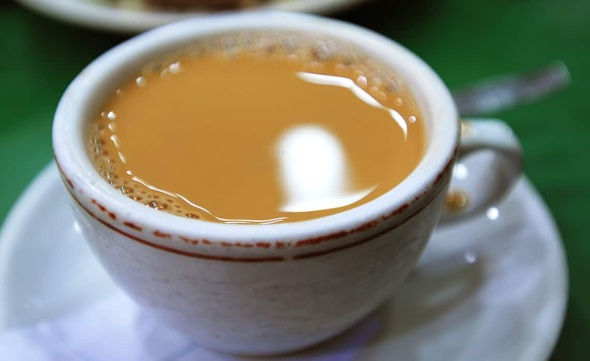
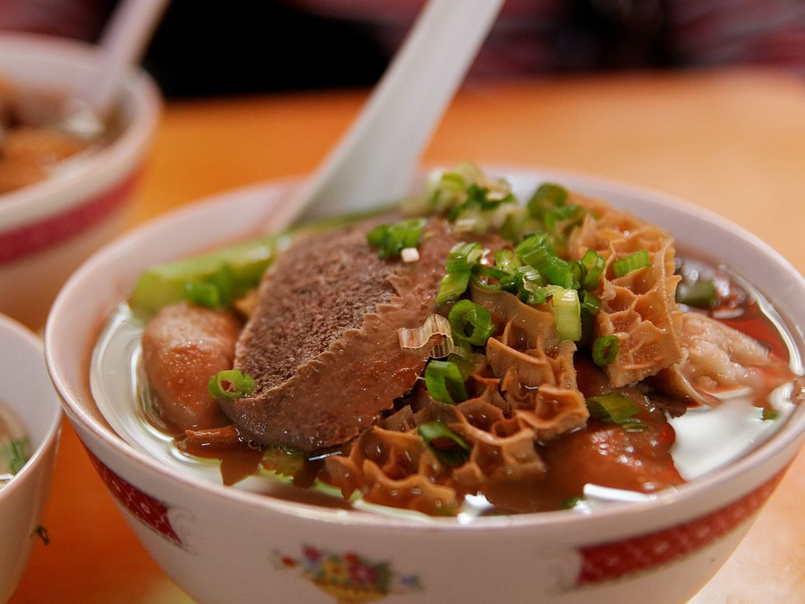

CAD
CAD EUR
EUR USD
USDRed Bean Ice
Red bean ice is a drink commonly found in Hong Kong. In Cantonese, it is called hong dou bing. It is usually served in restaurants like cha chaan teng. The standard ingredients include adzuki beans, light rock sugar syrup, and evaporated milk. It’s cold and sweet. Kids absolutely love this!
What does it look like?
What's the price?
HKD 24 per cup
Where to find it?
Address: Guong Shing Ice Cafe, 10 San Shing Ave, Sheung Shui
Salty-Lemon Seven-Up
Though anything salty with a soft drink seems like a bad idea, this drink is actually not as disgusting as you think and it's great for when you have a sore throat thanks to the preserved salted limes in it. Salty limes with 7up, or ham ling chut, is served on ice and does everything a drink with your meal is supposed to; quench your thirst and cut right through all the rich dishes you might be indulging in.
What does it look like?
What's the price?
HKD 22 per cup
Where to find it?
Address: Kam Wah Cafe, G/F, 47 Bute Street, Prince Edward
Silk-stocking Milk Tea
Hong Kong-style Milk Tea is a tea drink combining black tea and milk. The reason why this drink is named "silk-stocking milk tea" is that the drink is repeatedly filtered by a sackcloth bag to make the tea smoother. The bag is thus coloured in brown which looks like the silk-stocking. Moreover, the skill of making "silk-stocking milk tea" has been listed into The Intangible Cultural Heritage Inventory of Hong Kong.
What does it look like?

What's the price?
HKD 20 per cup
Where to find it?
Address: Lan Fong Yuen, G/F, 2 Gage Street, Central
Sugar Cane Juice
Most every street food stall will have a drinks section that offers refreshments to complement your food. Of the many choices you’ll be presented with, we recommend grabbing a cup of sugar cane juice. Refreshing and extremely sweet, it’s usually made on the spot by pressing steamed sugar cane with a machine. You’ll spot a shop that sells it from a mile away — it’ll have a large bucket of canes jutting out the side, and a long line of thirsty people in front.
What does it look like?
What's the price?
HKD 32 per bottle
Where to find it?
Address: Kung Lee Sugar Cane Drink, 60 Hollywood Road, Central
Yuen Yeung
Coffee or tea? Yuen Yeung (coffee with tea) is one of the most popular drinks in Hong Kong. Tasty and energizing, this drink is made out of coffee and tea, and has been modernized to adapt to the ever-changing needs of customers. In a perfect blend of Yuenyeung , one can neither taste the milk tea nor the black coffee.
What does it look like?
What's the price?
HKD 25 per cup
Where to find it?
Address: Keung Kee, 219 Ki Lung St, Sham Shui Po
Beef Offal
Hongkongers were snacking on cow offal long before nose-to-tail became a dining trend. Slow-cooked beef smooth tripe, small intestines, large intestines, honeycomb tripe, lungs and more are served with chu hou sauce (a soybean-based condiment) and refreshingly sweet turnip in a take away bowl.
What does it look like?
What's the price?
HKD 40 per bowl
Where to find it?
Address: Shui Kee, 2 Gutzlaff Street, Central
Curry Fish Balls
Curry fishballs are probably Hong Kong’s most iconic street snack – nearly every savoury street stall sells these. Though they’re mostly made from flour these days and contain almost no fish meat, this has had little effect on the snack's popularity. Springy in texture, the bite-sized spheres bob about in a strong curry sauce before they're skewered on a bamboo stick or ladled into a takeaway bowl for on-the-pavement enjoyment.
What does it look like?

What's the price?
HKD 12 per skewer
Where to find it?
Address: Liang Liang Noodles Shop, Shop 22-23, G/F, New Mandarin Plaza, 14 Science Museum Road, Tsim Sha Tsui
Deep-fried Pig Intestine
These bright orange rounds are made by wrapping various layers of pig intestines into a sausage-like bundle. Trust us: it’s really much more appealing than it sounds, especially when it’s deep-fried in oil until the outer casing becomes crisp while the centres remain moist with an ever-so-slight chewiness. Enjoy these skewered things with a squeeze of sweet sauce.
What does it look like?
What's the price?
HKD 15 per skewer
Where to find it?
Address: He Cang Guilin Night Market, 55 Dundas Street, Mong Kok
Imitation Shark’s Fin
Three reasons to try this popular street snack: 1) it’s much more ethical than real shark’s fin; 2) it’s also much, much cheaper than the real deal; and 3) it’s absolutely delicious. The thick, umami broth usually brims with glass noodles and shredded black fungus, as well as shredded chicken, fish or duck. Add a splash of vinegar or pepper for some extra punch.
What does it look like?

What's the price?
HKD 30 per bowl
Where to find it?
Address: Block 18 Doggie's Noodle, 27-31 Ning Po Street, Yau Ma Tei
Rice Noodle Roll
Loved for its smooth texture and distinct al dente chew, cheung fun is made by rolling steamed rice noodle sheets into bundles, then chopping them into two-bite pieces. Unlike the type served at dim sum restaurants, the streetside variety usually comes without fillings. It’s relatively bland on its own, which is why it’s eaten with a healthy dousing of sauces (sweet, peanut, chilli and soy) and sesame seeds.
What does it look like?
What's the price?
HKD 20 per bowl
Where to find it?
Address: Kwan Kee, 81a Chik Fu St, Tai Wai
Shumai
Immediately recognisable by its bright yellow wrapper, this ubiquitous streetside snack differs from its pork-filled counterpart served in dim sum parlours in that it’s made with flour kneaded with a bit of fish meat (although most stalls forego the latter ingredient completely nowadays to cut costs). These are then steamed and doused in soy sauce. Those who crave a kick of heat can also pile on the chilli sauce. Like fishballs, you’ll find steamed siu mai at most savoury snack stalls.
What does it look like?
What's the price?
HKD 20 per bowl
Where to find it?
Address: Hung Fook Tong, Mei Foo Station, Mei Foo
Stinky Tofu
Despite its pungent odour, stinky tofu is one of the most delicious snacks you can find on our streets. The bean curd gets its distinct funk from a lengthy process of fermentation, usually in a brine of milk, vegetables or even meat. It’s then deep-fried and usually served with chilli sauce. The outer layer is crisp and golden and gives way to a soft and creamy centre. If you can get past the smell, this stinky snack is sure to please.
What does it look like?
What's the price?
HKD 6 per piece
Where to find it?
Address: Delicious Food - Stinky Tofu, Shop 10, G/F, 30-32 Nullah Road, Prince Edward
Soy-braised Cuttlefish & Octopus
Bright orange and with tentacles and suction cups still intact, these might not be the most visually appealing of Hong Kong’s street foods, but they sure are delicious. The cuttlefish and octopus are usually boiled quickly until just tender and then dipped in a soy-based marinade for flavour. Eat them on a bamboo stick with a lick of mustard, as is de rigueur.
What does it look like?

What's the price?
HKD 15 per skewer
Where to find it?
Address: Fat Boy Shop, no.3 G1 Workingport Commercial Building, Hau Fook St, Tsim Sha Tsui
Stuffed Three Treasures
Alongside more modern innovations in street food such as mini egg puffs, you will find a smattering of fried foods on the menus of street stalls. Most commonly seen is what’s known to Hongkongers as ’three treasures’. Pieces of eggplant, tofu, and bell pepper are stuffed with fish paste and then fried. Usually eaten with soy sauce, these three dishes combine the heartiness of fish paste with the natural flavour of each of the different wrappers.
What does it look like?
What's the price?
HKD 10 for 3 pieces
Where to find it?
Address: Kung Wo Beancurd Factory, G/F, 118 Pei Ho Street, Sham Shui Po
Egg Tart
Said to be one of the favourite snacks of Chris Patten, the last British governor of Hong Kong, the egg tart is a very different beast from the egg waffle. It consists of a creamy yellow custard filling baked in either a cookie or a flaky pastry crust. Either crust perfectly complements the gooey, sweet filling.
What does it look like?
What's the price?
HKD 6 per piece
Where to find it?
Address: Tai Cheong Bakery, 35 Lyndhurst Terrace, Central
Egg Waffle
It's hard to resist the sweet, heavenly smell of eggettes, known as gai daan zai in Cantonese. These are made by pouring egg batter onto a griddle pan and cooking until it's crisp on the outside and soft and fluffy on the inside. Most vendors will offer a no-frills, original egg flavour and some places might do chocolate, sesame and green tea, among other crazier incarnations.
What does it look like?
What's the price?
HKD 15 per piece
Where to find it?
Address: Lee Keung Kee North Point Egg Waffle, 492 King's Road, North Point
Milk Pudding
Simple yet delicious, ‘double skin’ milk pudding is a creamy treat typically made using only egg white, milk and sugar. The trick lies in getting the double layered skin to form on the surface. Though not the most appealing in name, a taste of this warm and smooth pudding immediately warms the belly.
What does it look like?
What's the price?
HKD 42 per bowl
Where to find it?
Address: Yee Shun Milk Company, 513 Nathan Rd, Yau Ma Tei
Sugar Donut
Sugar donut (or “Sa Yong” in Cantonese) is a Cantonese style donut. The main ingredients are sugar, lard, eggs and flour. The kneaded and risen dough is deep fried until golden brown before it is dusted with sugar. The outcome is a sugar donut that is crispy on the outside and fluffy in the inside.
What does it look like?

What's the price?
HKD 16 per piece
Where to find it?
Address: Tai O Bakery,no. 66, Kat Hing Street, Tai O, Lantau Island
Tofu Pudding
Tofu pudding is essentially a bowl of the smoothest and softest bean curd served in clear syrup and sweetened ginger. Its melt-in-your-mouth silky texture makes it one of the most beloved desserts in Hong Kong.
What does it look like?
What's the price?
HKD 15 per bowl
Where to find it?
Address: Grandma's Tofu Pudding, 2A Tai Kwong Ln, Tai Po